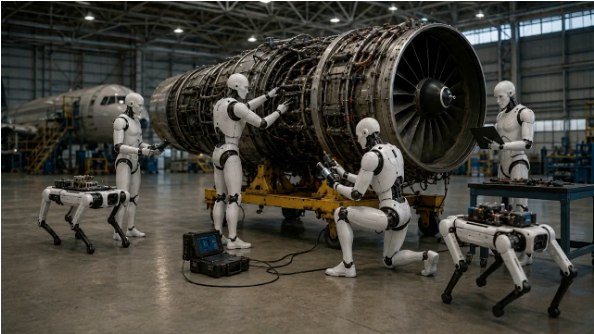

Team Leader
杨来浩 副研究员
西安交通大学机械工程学院、航空发动机研究所。研究方向包括具身智能、机器人、触觉传感、航空发动机健康管理、AI for Science 与可解释人工智能。
About
团队依托西安交通大学机械工程学院、航空发动机研究所及健康管理与数字孪生相关平台，面向高端装备安全运行、智能检测和原位维护需求，开展机器人、智能传感、结构动力学、数字孪生和可解释人工智能交叉研究。
Team Leader
西安交通大学机械工程学院、航空发动机研究所。研究方向包括具身智能、机器人、触觉传感、航空发动机健康管理、AI for Science 与可解释人工智能。
Research
团队研究主线可概括为“智能诊断、原位介入、具身操作”。三者构成从装备状态感知到机器人进入，再到精细处置的完整链路：先判断损伤在哪里、程度如何，再让柔顺机器人进入复杂深腔空间，最终融合人形机器人、灵巧手、触觉感知和具身智能实现稳定操作。

判得准
面向航发/燃机关键零部件损伤演化机理、非接触振动监测、叶尖定时、信号采集调理和损伤定量评估，构建融合物理模型与数据智能的诊断方法。

进得去
面向高端装备复杂深腔受限空间，发展原位介入连续体机器人、爬行机器人和柔顺控制理论，使机器人能够在狭窄、弯曲、遮挡和接触丰富环境中稳定抵达目标区域。

操作稳
融合人形机器人、灵巧手、触觉感知、视觉检测和具身智能技术，面向高端装备精细操作、原位处置和复杂任务执行，提升机器人的稳定操作与环境适应能力。
News
团队招生方向包括新一代人工智能与传感、航空发动机机器人检测技术、航空发动机数字孪生与健康管理、柔性与软体机器人等。
项目周期为 2025.01-2028.12，围绕航空发动机原位维护与连续体机器人关键技术展开。
学校主页显示团队在 2025 年获得 ICSMD 2025 Best Paper Award 及全国振动理论及应用学术会议高水平论文奖等荣誉。
团队机器人相关研究在 2024 年获得第五届中国机器人学术年会最佳海报奖。
博士、硕士、本科生及联合培养成员名单可继续按年级、方向、课题组职责补充。
学校主页列出团队相关成果获得 2023 年陕西省高等学校科学技术奖一等奖。
Members
团队围绕高端装备智能检修机器人形成多层次人才培养体系，覆盖教师、博士后、博士研究生、硕士研究生和本科生。当前公开页面先展示团队负责人及成员结构，具体成员名单可后续补充。
团队领导
副研究员，博士。西安交通大学机械工程学院、航空发动机研究所。
围绕航空发动机健康管理、机器人检测、智能传感和数字孪生开展跨方向协同。
聚焦具身操作、机器人系统集成、物理智能诊断和 AI for Science 方法拓展。
承担连续体机器人、航发原位维护、结构动力学建模、稀疏诊断等核心研究。
参与智能传感、机器人设计、数据采集、控制算法、实验平台搭建和工程验证。
欢迎参与机器人、机械设计、数学建模、嵌入式系统、视觉检测和科研训练项目。
依托航空发动机健康管理教育部重点实验室、机械制造系统工程国家重点实验室等平台。
Achievements
IEEE Transactions on Instrumentation & Measurement
Measurement
IEEE Robotics and Automation Letters
Mechanism and Machine Theory
发明专利
发明专利
发明专利
专著
荣誉奖励
荣誉奖励
荣誉奖励